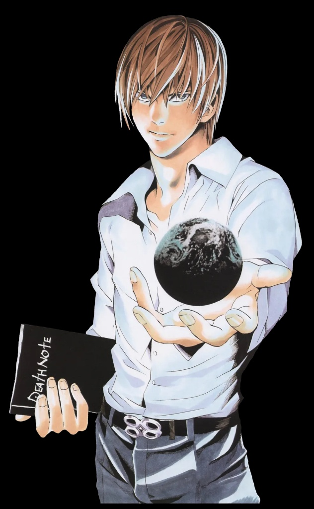
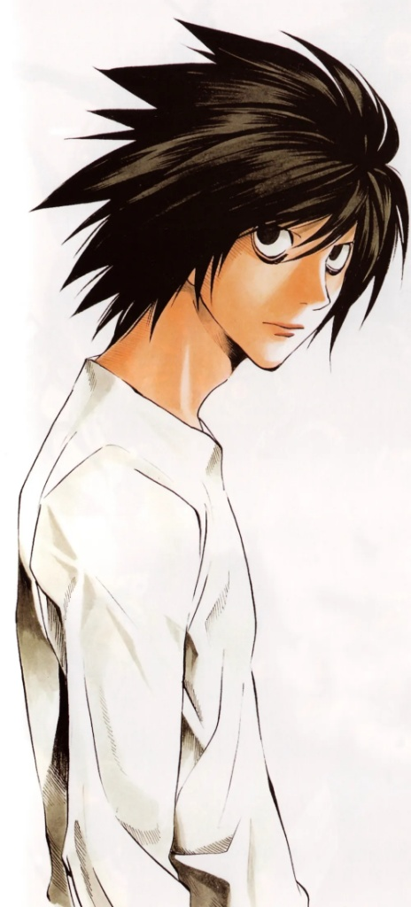

"당신은 라이토의 신세계에 서겠습니까,
엘의 정의에 서겠습니까?"
"내가 바로
신세계의 신이 된다."
기존의 타락한 사법 체계는 악인들을 처벌하지 못하고 방관했습니다. 데스노트는 나약한 인간들에게 정의를 전파하기 위해 내려진 유일한 도구이며, 죄 없는 약자들이 안전하게 살아갈 유토피아를 만들기 위한 정당한 희생을 집행합니다.

"난 신세계의 신이 되겠어."
"어떤 이유에서든,
살인은 범죄입니다."
과정이 타락한 정의는 결코 정의가 아닌, 광적인 학살극에 불과합니다. 법이 정한 민주적 정당성을 훼손하는 사적 단죄는 혼란과 더 잔혹한 독재를 낳을 뿐이며, 보편적 인권과 객관적 이성만이 문명을 안전하게 유지할 유일한 수단입니다.

"이건 신의 심판이 아니라, 신의 심판이라 착각하는 정신 나간 녀석이 있다는 뜻이다."
데스노트가 불후의 명작이 된 3대 전율
왜 아직까지 이 대결구도는 역사상 최고로 회자될까요?
01. 사법 불신을 꿰뚫는 사적 제재
현실 세계 법 제도의 한계를 꼬집으며 흉악범들에게 가해지는 즉각적인 단죄. 대중의 어두운 갈망을 건드리는 정밀한 스토리텔링의 쾌감을 제공합니다.
02. 얼굴 and 이름을 감춘 두뇌 싸움
물리적 무력이 아닌, 순수한 지능과 논리로 벌이는 극한의 심리전. 상대방의 이름과 얼굴을 먼저 알아내기 위한 최고의 하이테크 추리 게임이 펼쳐집니다.
03. 권력의 타락과 한계
절대 권력을 쥔 인간이 어디까지 파멸해 나갈 수 있는가에 대한 철학적 비극. 단순 권선징악을 뛰어넘은 깊이 있는 고전을 소장하게 됩니다.
당신은 어느 쪽 정의에 공감하십니까?
선택은 한 번뿐입니다. 당신이 지향하는 사회적 정의를 실시간 여론 투표로 기록하십시오.
이 장엄한 천재들의 숨막히는 혈전,
원작에서 직접 종지부를 확인하세요.
단 한 권의 데스노트가 바꾼 인류 역사의 거대한 폭풍.
평단과 독자가 입을 모아 격찬한 최고의 추리 서스펜스 명작을 공식 플랫폼에서 감상해 보세요.